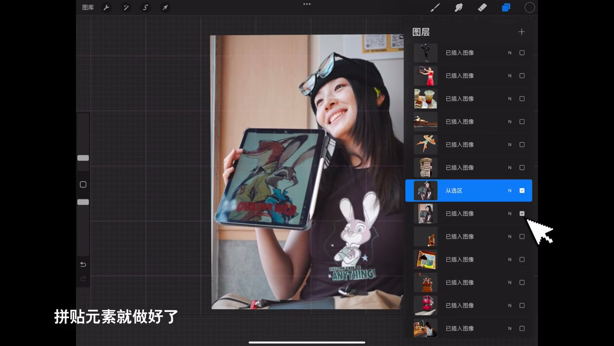
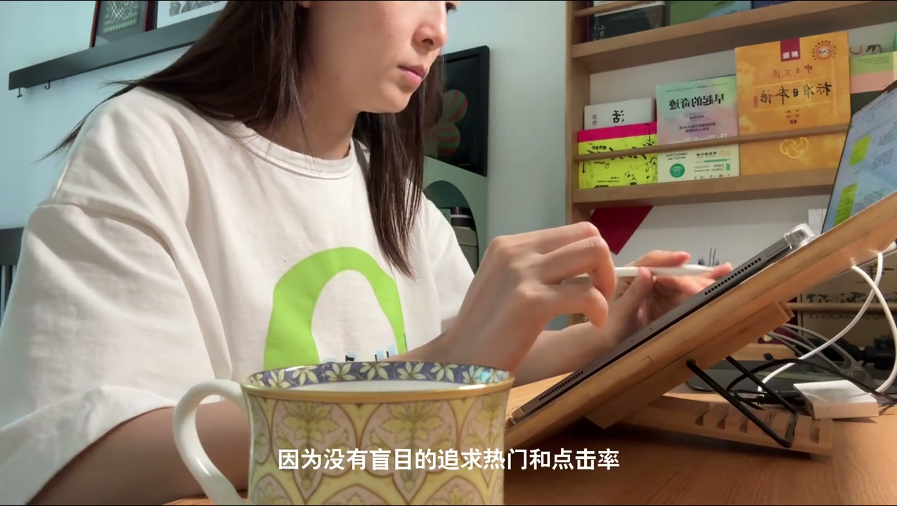

内容要点
这段视频围绕「这么会做视频封面不要命啦！（没错🥤是教程）」展开，按时间介绍其中的关键环节。没猜错的话,很能朋友关注我的原因是视频封面。
剪辑与呈现处理
没猜错的话,很能朋友关注我的原因是视频封面。特别有风格,眼前一亮,里面也太会夸了。是的,这些漂亮的小东西,我自己也很喜欢。把每个封面都当成是一次海报设计来做。所以会花费更多的时间,尝试不同的拼贴元素。反复的排列组合,直到自己满意为止。今天会全面的聊聊我的创作思路和制作过程。可以开始记笔记了。一个完整的拼贴封面,主要包括元素制作。排列组合,封面字体,三个部分
剪辑与呈现处理
发言工作代表,太好了,他又出教程了。确认好封面主角后就可以给他们选个背景元素。这一步主要是为了丰富画面。所以只要和内容相关的好看的元素都可以用。那么聊聊制作这些拼贴元素会使用到的工具。我常用的扣图工具是Procreate。在软件里插入照片,选择手绘工具。延伸人物的边缘开始描线,直到闭合。没有强迫症的朋友可以直接使用苹果相册扣图。点击拷贝笔粘贴,同时关掉背景图层

总结与收束
其他元素只做背景和装饰。如果重点太多,画面很平均。视觉上就会显得特别乱。最后就是大家最常问的封面字体。统一回复,所有的字体都是我自己手会完成的。大家也能看出来,每次的字体。其实也都不完全相同。主业有关于字体设计的详细教程。简单一动,大家可以去看看。封面对我来说是内容表达的重要部分

总结
其他元素只做背景和装饰。